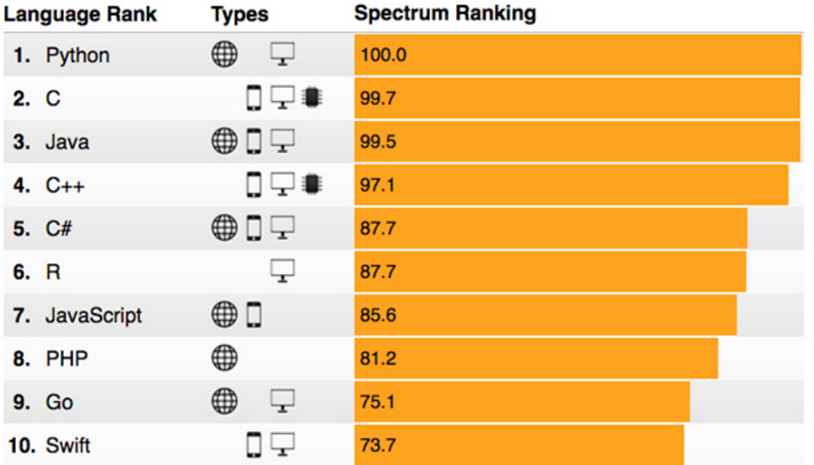
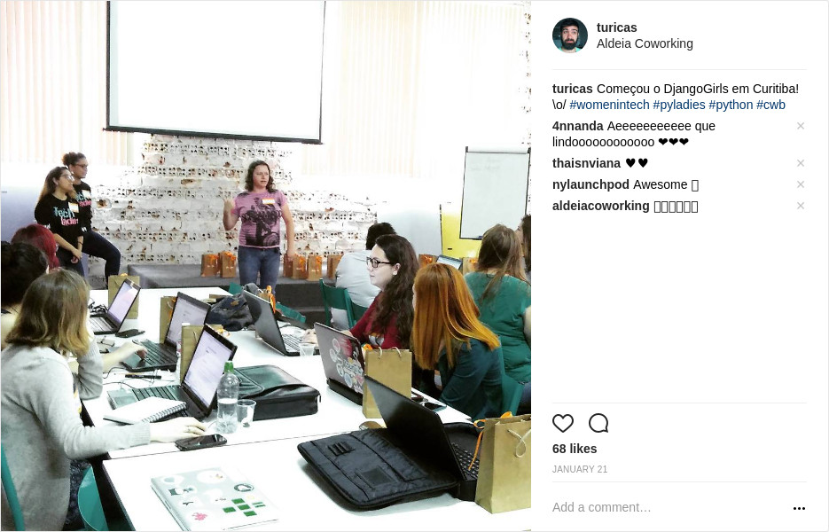

O Fantástico Mundo de Python
Turicas aka Álvaro Justen
Encontro do GruPy-PR + OpenDevCommunity
22 de julho de 2017 - Curitiba/PR
Turicas, prazer! =)
Sigam-me os bons:
{twitter,
github,
youtube,
slideshare,
instagram}
/turicas
turicas@pythonic.cafe
Blog: turicas.info
+55 41 999 311 221
(Signal, Telegram, WhatsApp)

escoladedados.org

generonumero.media

simplefractal.com


pythonic.cafe
youtube.com/c/PythonicCafe
Python

Guido van Rossum

Monty Python


Primeiro Programa
print("Olá, OpenDevCommunity!")Nada de parênteses, nada de chaves!
if expressao1:
comando1
if expressao2:
comando2
elif expressao3:
comando3
elif expressao4:
comando4
else:
comando5
Slices em listas e strings
lista = [1, 3, 4, 'Arduino', 'Python']
print(lista[1])
print(lista[1:4])
for elemento in lista:
print(elemento)
arquivo = 'nome.txt'
print(arquivo[-3:])
print(arquivo[5:])
novo_arquivo = 'nome.do.arquivo.txt'
print(novo_arquivo.split('.'))
print(novo_arquivo.split('.')[-1])
extensao = 'nome.do.arquivo.py'.split('.')[-1]
print(extensao)
Trabalhando com arquivos
arquivo_1 = open('nome.txt')
for linha in arquivo_1:
print(linha)
arquivo_1.close()
arquivo_2 = open('nome-2.txt', 'w')
arquivo_2.write('Python rules!')
arquivo_2.close()

Fonte: xkcd.com/353
Lendo CSVs
import csv
municipios = csv.DictReader(open('brasil.csv'))
for municipio in municipios:
if municipio['estado'] == 'PR':
densidade = int(municipio['habitantes']) / float(municipio['area'])
print(municipio['nome'] + '/PR' + ': ' + str(densidade) + ' hab/km²')
Navegando com Python
import urllib
url = 'http://pythonic.cafe/'
pagina = urllib.urlopen(url)
print(pagina.read())
Lendo CSV (com outra biblioteca)
import rows
municipios = rows.import_from_csv('municipios-brasil.csv')
for municipio in municipios:
if municipio.estado == 'PR':
densidade = municipio.habitantes / municipio.area
print(municipio.nome + '/PR' + ': ' + str(densidade) + ' hab/km²')
Navegando com Python (com outra biblioteca)
import requests
url = 'http://pythonic.cafe/'
pagina = requests.get(url)
print(pagina.content)
Navegando [2]
from splinter import Browser
browser = Browser('firefox')
browser.visit('http://www.google.com.br/')
browser.fill('q', 'GruPy-PR meetup')
button = browser.find_by_name('btnG')
button.click()
if browser.is_text_present('https://www.meetup.com/pt-BR/GruPy-PR/'):
print('Estamos na primeira página')
else:
print('Err... efeito demonstração')
browser.quit()
Programming Language?

Fonte: github.com/stereobooster/programming-languages-genealogical-tree
Top Programming Languages
Fonte: spectrum.ieee.org/computing/software/the-2017-top-programming-languages
Diversidade
Django Girls, Curitiba (janeiro de 2017)
Um monte de gente linda

PythonBrasil[12], Florianópolis (outubro de 2016)
Muita cerveja

PythonBrasil[12], Florianópolis (outubro de 2016)
>>> import this
The Zen of Python, by Tim Peters
Beautiful is better than ugly.
Explicit is better than implicit.
Simple is better than complex.
Complex is better than complicated.
Flat is better than nested.
Sparse is better than dense.
Readability counts.
Special cases aren't special enough to break the rules.
Although practicality beats purity.
Errors should never pass silently.
Unless explicitly silenced.
In the face of ambiguity, refuse the temptation to guess.
There should be one-- and preferably only one --obvious way to do it.
Although that way may not be obvious at first unless you're Dutch.
Now is better than never.
Although never is often better than *right* now.
If the implementation is hard to explain, it's a bad idea.
If the implementation is easy to explain, it may be a good idea.
Namespaces are one honking great idea -- let's do more of those!